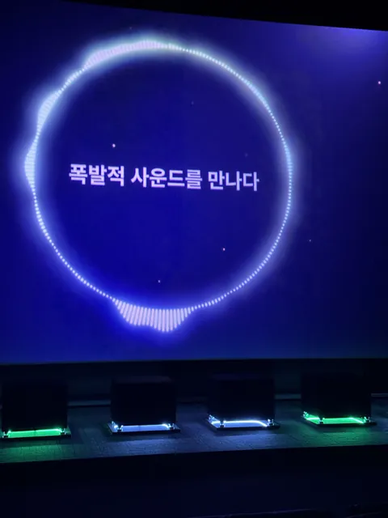
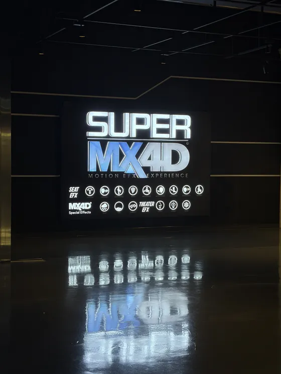
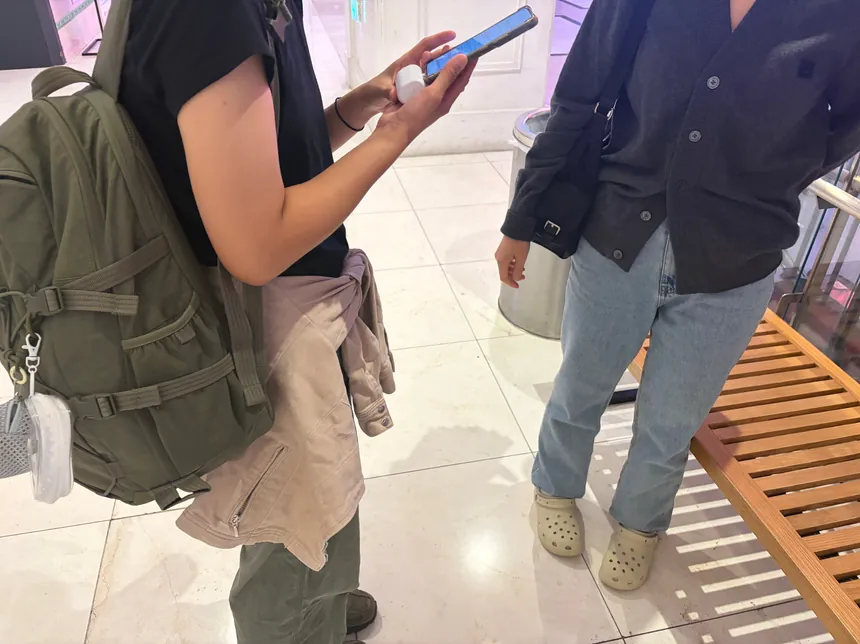
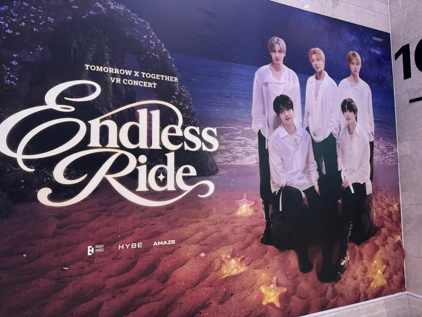
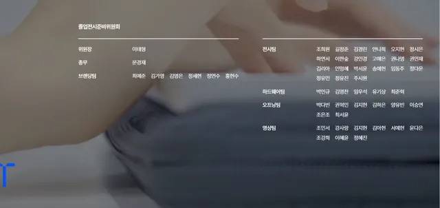
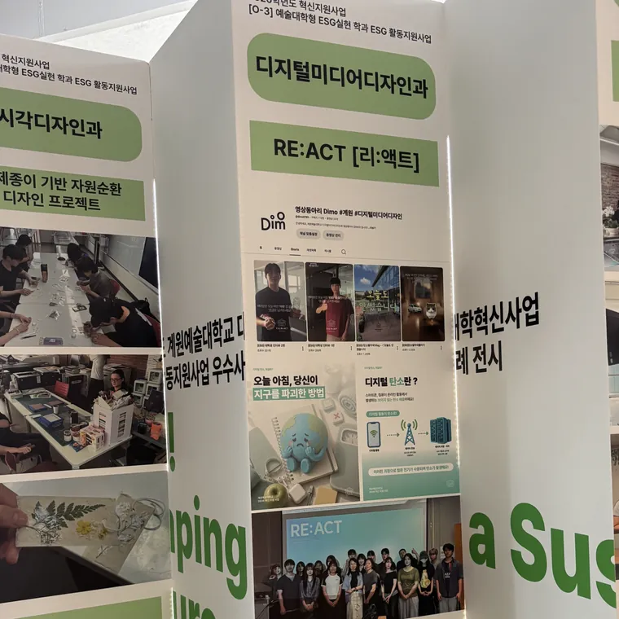
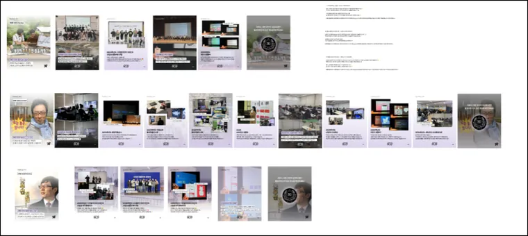
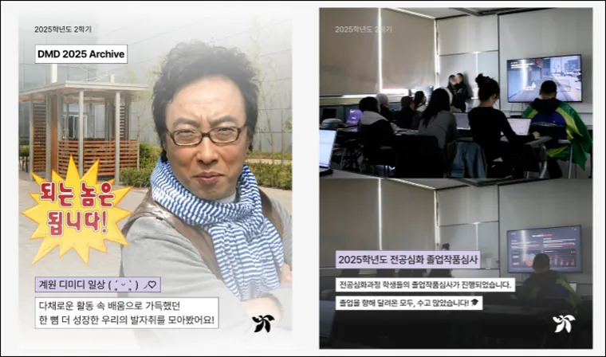

ROOK실행력
가로 · 세로 방향으로 원하는 만큼 이동



실행력
낯선 문제일수록 직접 배우고 부딪힙니다.
온라인뿐만 아니라 현장까지 확인합니다.


2026.09.12 롯데시네마 필드리서치 및 현장 인터뷰
04 / MY BOARD
체스 말이 움직이는 모양 그대로 제 역량을 놓았습니다.
사진에 올리면 그 칸에 색이 찹니다. 마우스를 가장자리로 옮기면 판이 그쪽으로 움직입니다.
마우스를 움직여 둘러보세요
ROOK실행력
가로 · 세로 방향으로 원하는 만큼 이동


실행력
낯선 문제일수록 직접 배우고 부딪힙니다.
온라인뿐만 아니라 현장까지 확인합니다.


2026.09.12 롯데시네마 필드리서치 및 현장 인터뷰
KNIGHT확장성 · 도전
가장 가까운 칸으로 꺾어 이동하며, 다른 기물을 뛰어넘음
확장성 · 도전
분야의 경계를 넘어 경험을 확장합니다.AI 동아리 활동 / 졸업 준비위원회



2026.10.02 AIM 동아리 활동 — 웹사이트 제작
2025 졸업전시준비위원회 전시팀 · 2026 브랜딩팀
BISHOP발견 · 유연함
대각선 방향으로 원하는 만큼 이동

발견 · 유연함
다른 직군들과 소통하며,
공동의 작업이 이루어지게 합니다.

